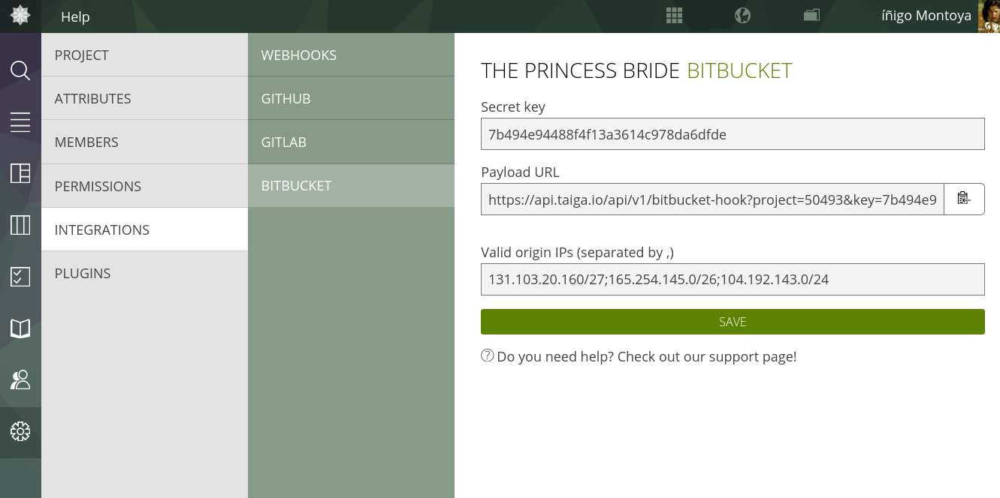
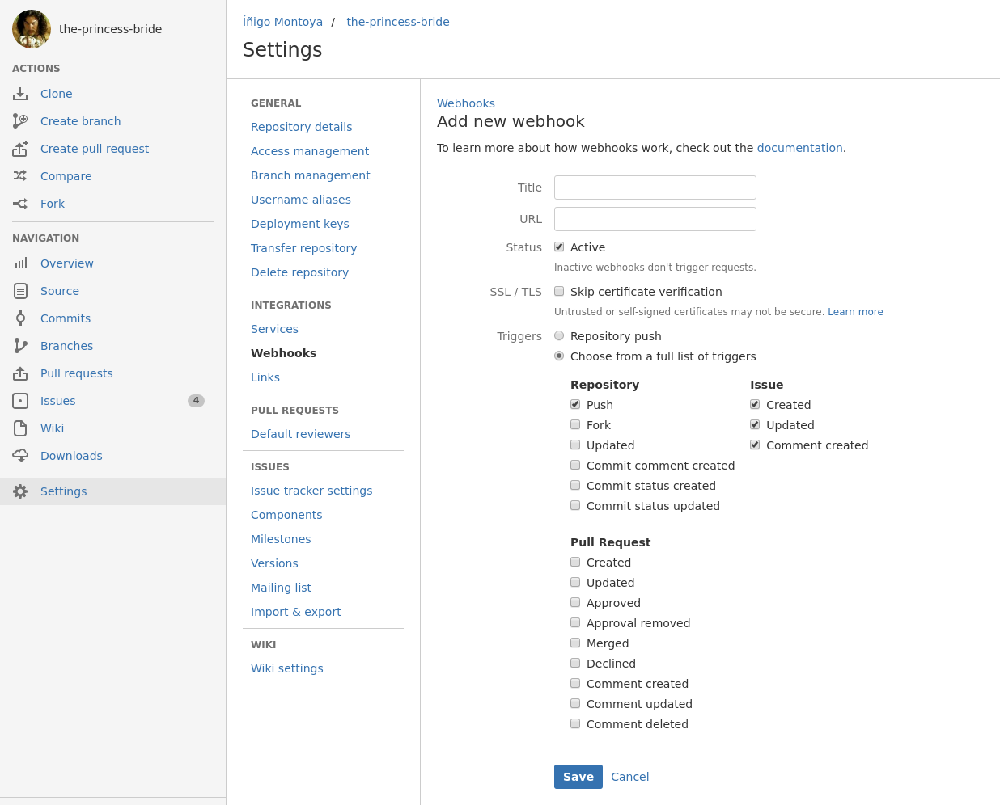

Bitbucket Integration
- What currently can we do?
- And what can't we do?
- First: Configure the integration module in Taiga
- Second: Configure Webhooks in your Bitbucket repository
Bitbucket is a web-based hosting service for projects that use either the Mercurial (since the origin) or Git (since October 2011) revision control systems.
What currently can we do?
Right now you can connect a Bitbucket repository with one Taiga project and generate a one-way communication (from Bitbucket to Taiga) to:
- Change the status of an story, issue, or task in Taiga with the commit message: you may want to read more about this feature in the article "Changing elements status via commit message".
- Create issues on Taiga when they are created on Bitbucket*.
- Add comment to the connected issues on Taiga when they are created on Bitbucket.
In Taiga an issue is connected with a Bitbucket issue if it was creted by the Bitbucket integration. In the detail page of an issue on Taiga you can see a link under the subject to the original issue in Bitbucket.
And what can't we do?
- Dual synchronization: currently the integrastion functionality only allow to recive messages fromt Bitbucket and Taiga can't comunicate with Bitbucket, so any changes you make in Taiga will not be reflected in Bitbucket.
- Show commit links in Taiga issues: If you name a story, task or issue in a commit message (by its reference number) a link to commit not appear in Taiga.
- "Sync current Bitbucket issues and comment when the integration módule in Taiga is enabled*: the integration only works with the futere issues and comments added in Bitbucket.
Currently Bitbucket offers some limitations in its webHooks system that must be considered. These limitations are not hardcore but it's good to know them to be aware of the limitations that exist.
- Bitbucket doesn't encrypt the messages so all the information is transferred in clear. Taiga only can confirm the origin checking the IPs in the request. Bitbucket can change their IP ranges of their servers when they want so with every change you have to update your configuration in Taiga to prevent errors.
- Webhooks mesages can olnly contains a maximum of 5 commits (up to 5 of the most recent ommits pushed) according to the Bitbucket documentation.
Integration will always take time so please be patient. If you need a specific integration and you feel ready to get a machete and get into the taiga, please review our API Docs and our FAQs about how you can contribute to Taiga.
If you need help in a specific feature, you can always get in touch with the community and contact with us.
First: Configure the integration module in Taiga
- Go to Admin > Integrations > Bitbucket
- Fill secret key or use the auto generated one
- Copy the Payload URL field.
- Optionaly you can define the valid emisor IPs or IP ranges to validate the origin of the requests. You can find the valid IP ranges for the Bitbucked Cloud service here

Second: Configure Webhooks in your Bitbucket repository
- Click on Settings > Webhooks
- Click on "Add webhook" button
- On that form set the url with the payload url of this screen and choose some title (ex. "Taiga.io").
- Taiga listen three triggers, you can select all or some of them:
- Repository - Push: Changing element status via commit message
- Issue - Created: To clone new issues created in Bitbucket to Taiga
- Issue - Comment created: To add new comments to related issues
- Press Save button to create the new webhook
